Deploy preview of draft PR 107, commit 65acd34, on live data, read 15 October 2026 at 7:08 PM ET. Full-page captures; the white block low on some captures is the phone tab bar and a sticky element drawn once by the full-page screenshot.
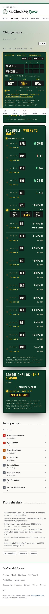
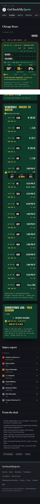
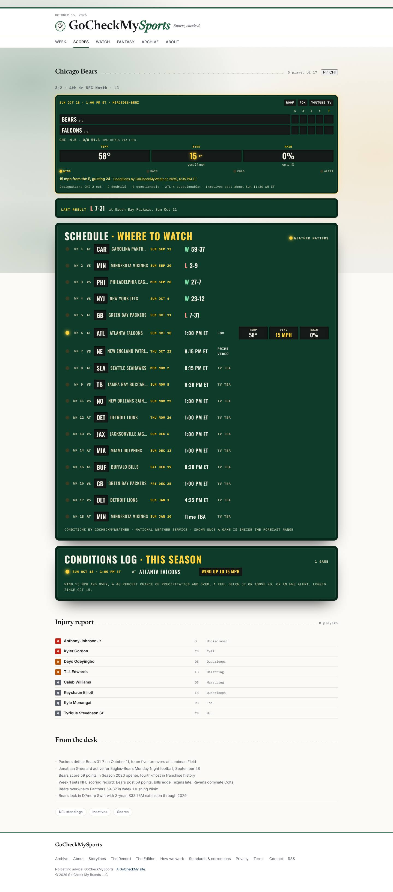
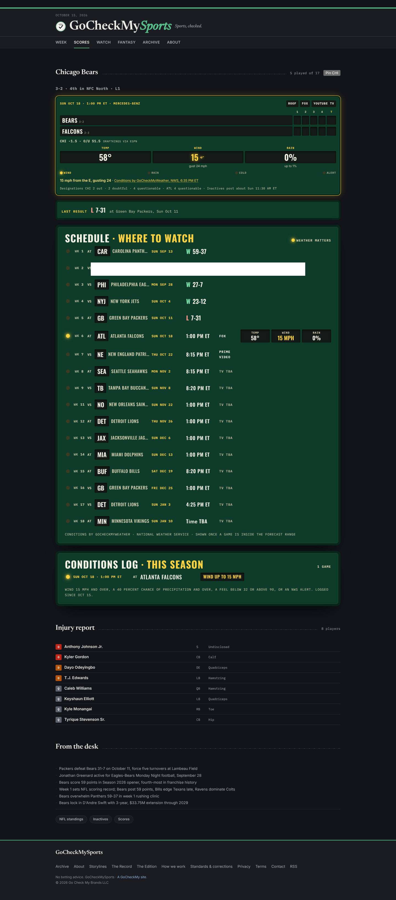
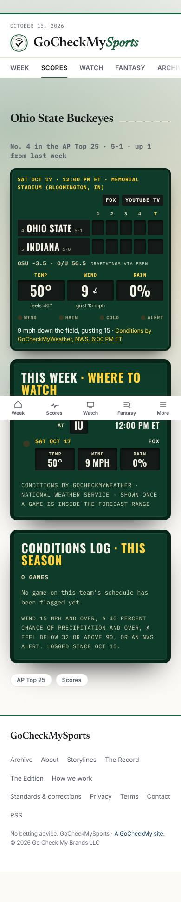
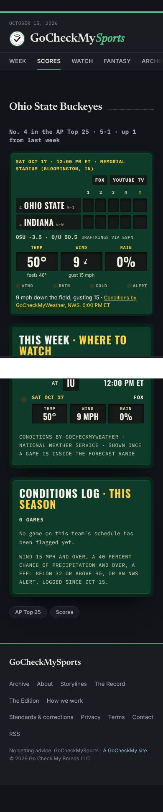
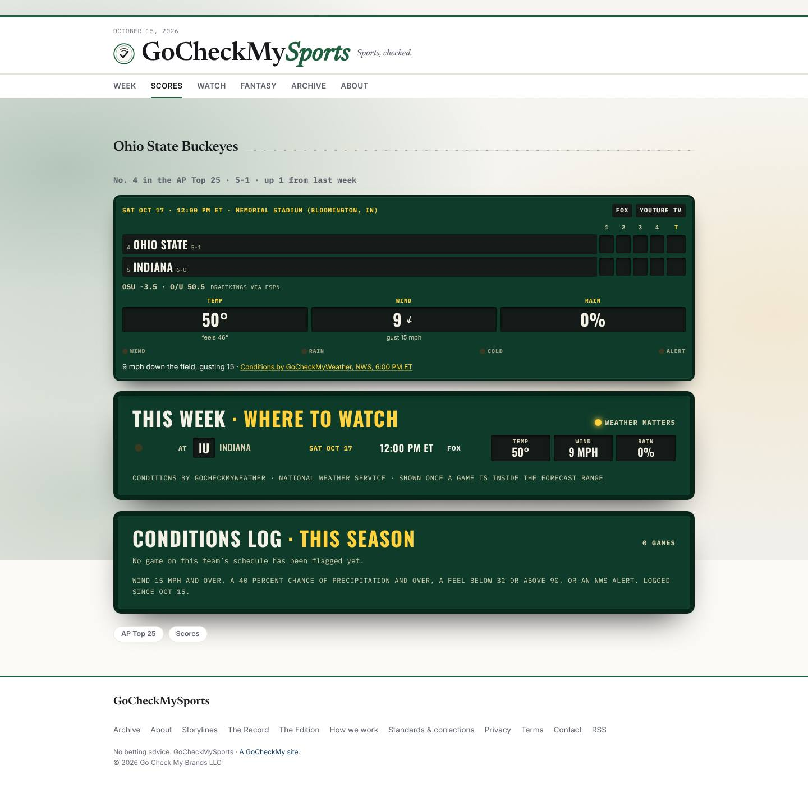
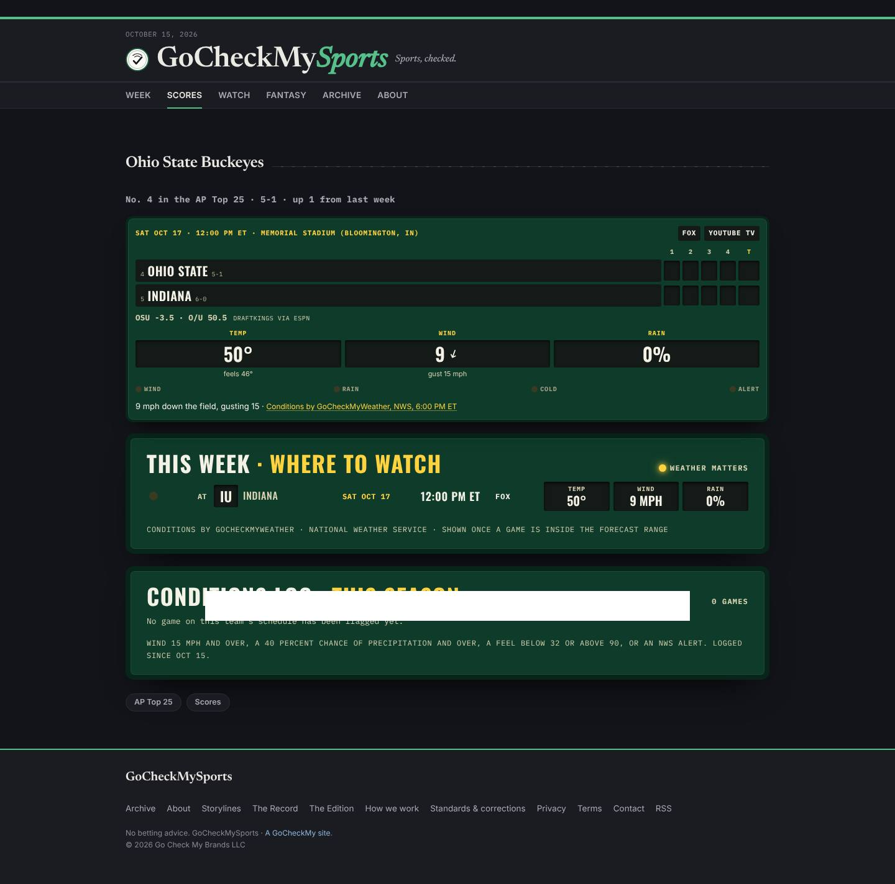
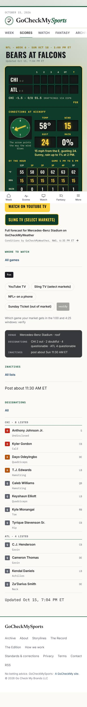
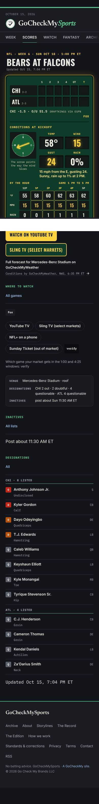
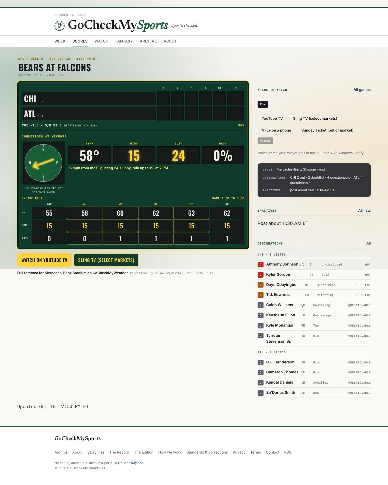
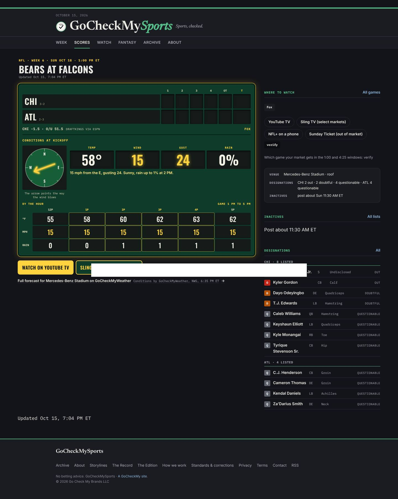
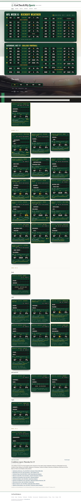
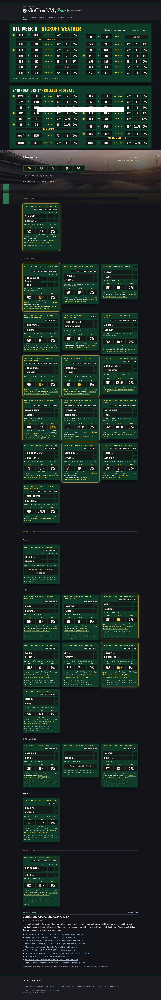
Parsed from the page's application/ld+json by json.loads; every name and the Fox broadcast are on the page.
| @type | SportsEvent |
|---|---|
| @id | https://gocheckmysports.com/games/401872999.html#event |
| name | Chicago Bears at Atlanta Falcons |
| url | https://gocheckmysports.com/games/401872999.html |
| sport | American football |
| startDate | 2026-10-18T13:00:00-04:00 |
| eventStatus | https://schema.org/EventScheduled |
| eventAttendanceMode | https://schema.org/OfflineEventAttendanceMode |
| location.@type | Place |
| location.name | Mercedes-Benz Stadium |
| awayTeam.@type | SportsTeam |
| awayTeam.name | Chicago Bears |
| awayTeam.sport | American football |
| homeTeam.@type | SportsTeam |
| homeTeam.name | Atlanta Falcons |
| homeTeam.sport | American football |
| competitor[0].@type | SportsTeam |
| competitor[0].name | Chicago Bears |
| competitor[0].sport | American football |
| competitor[1].@type | SportsTeam |
| competitor[1].name | Atlanta Falcons |
| competitor[1].sport | American football |
| superEvent.@type | SportsOrganization |
| superEvent.name | National Football League |
| superEvent.sport | American football |
| @type | BroadcastEvent |
|---|---|
| name | Chicago Bears at Atlanta Falcons on Fox |
| isLiveBroadcast | True |
| startDate | 2026-10-18T13:00:00-04:00 |
| broadcastOfEvent.@id | https://gocheckmysports.com/games/401872999.html#event |
| publishedOn.@type | BroadcastService |
| publishedOn.name | Fox |